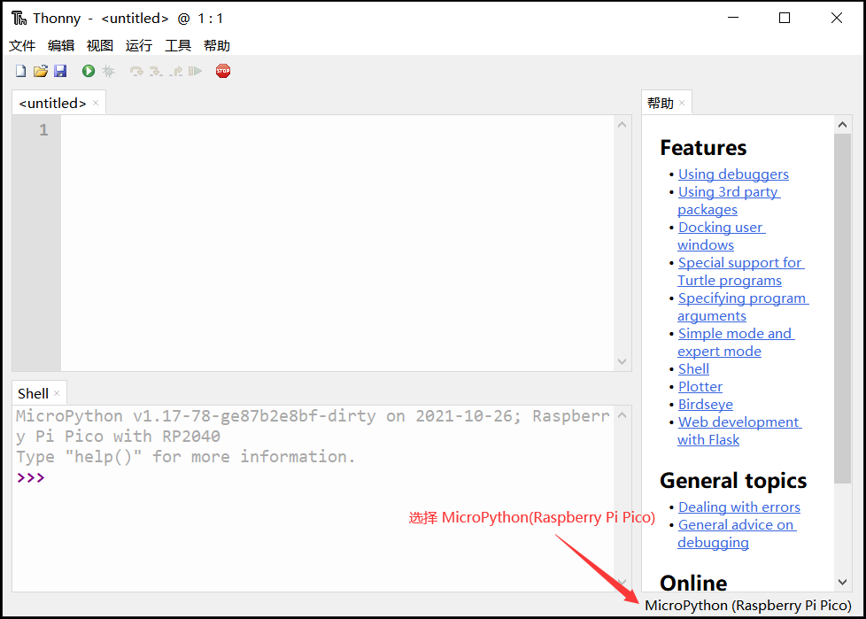
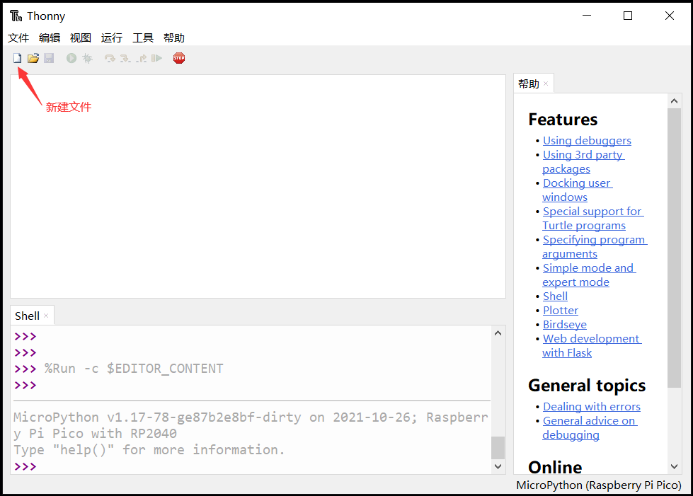
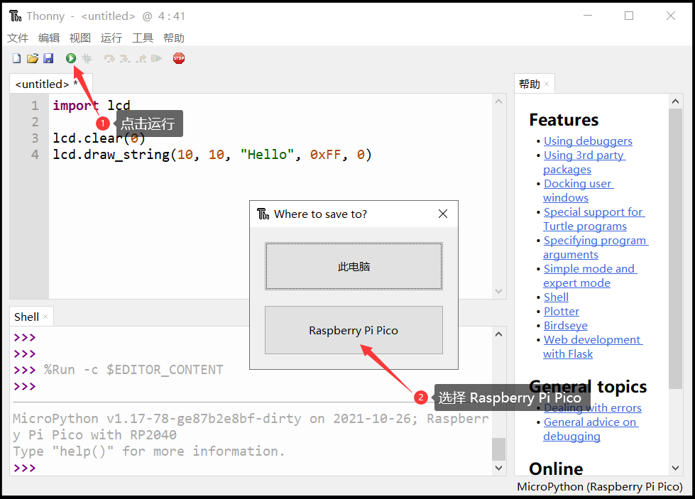
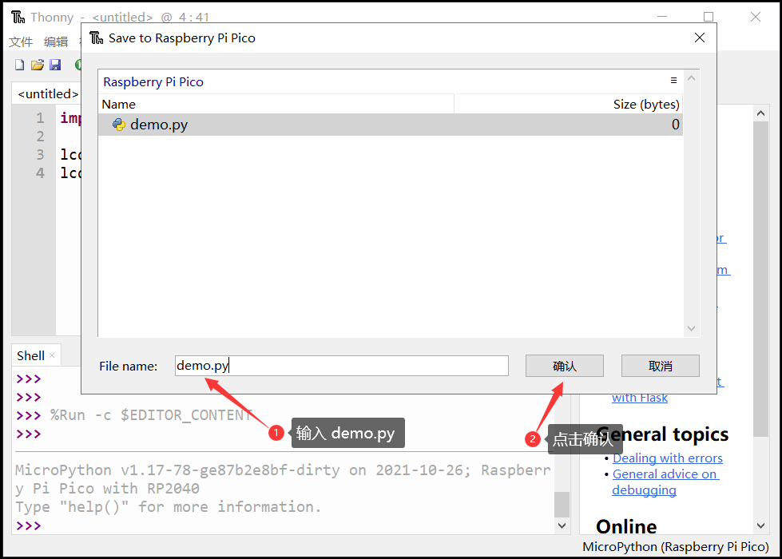
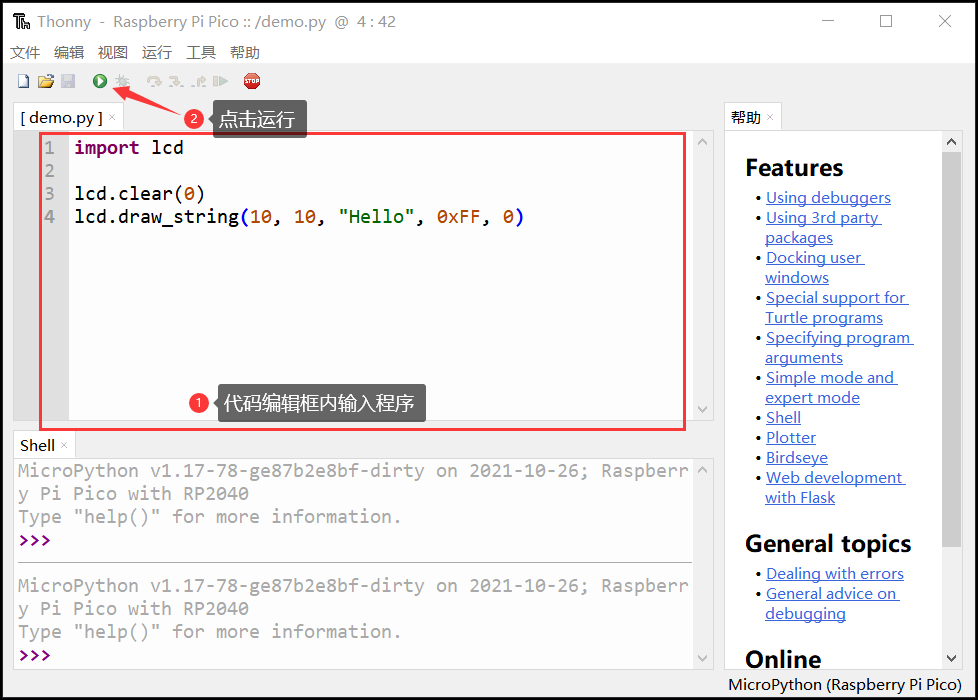

使用说明¶
1. 简介¶
“启蒙 Micropython 套件”是可用于Python教学、创客项目制作的可编程电子套件。
供电方式：USB TypeC（DC: 5V）
处理器: 树莓派 RP2040，双核 ARM Cortex-M0，主频：133MHz；
存储：Flash：8MiB; SRAM：264kB;
显示屏：2.4英寸，分辨率320*240，IPS全视角液晶显示屏
- 板载模块：
两个按键
无源蜂鸣器
液晶显示屏
拓展接口：8个 Grove标准接口(UART/I2C/ADC/GPIO)
- 拓展套件模块：
按键组
电位器
温湿度传感器
超声波测距传感器
可编程全彩LED
电机风扇
语音识别模块
2. 案例测试¶
通过TypeC数据线连接开发板到电脑，打开软件，如下图所示：
点击连接设备

首次运行，先新建文件

点击运行，在弹出的提示框中选择 Raspberry Pi Pico

输入文件名 demo.py，点击确认

输入或复制示例程序到程序编辑框内，点击“运行”，观察。

3. 固件升级¶
按住 Flash 按键，连接 USB，释放按键，可以看到系统出现“RPI-RP2(H:)”盘符，将固件复制进去即可完成固件更新。

注解
由于文档、固件持续更新，为保证使用体验的一致性，在测试案例前，请先升级固件到最新版本。
查看当前运行的固件版本：
import openaie
print("version:", openaie.__version__)